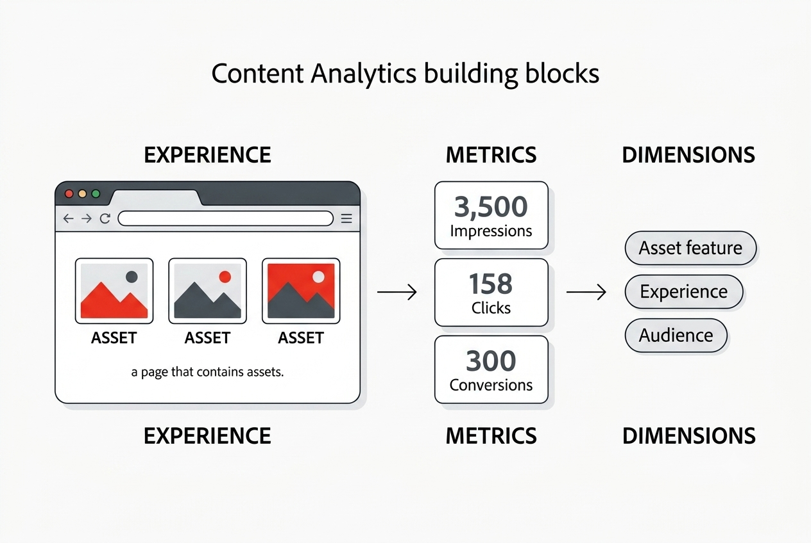

Content Analytics — a guided walkthrough
A three-lesson demo that follows one asset through the Content Analytics loop: from understanding the content, to proving it converts, to acting on the insight. Work through the lessons in order.
First, the building blocks
Content Analytics describes your content with a small taxonomy. Keep these four terms in mind — every lesson builds on them:

- Assets — an individual, unique piece of content: an image. This is what the featurization service analyzes. (Content Analytics featurizes images, not video.)
- Experiences — the page or screen where assets appear, along with its text. One experience (a web page) can contain several assets.
- Metrics — the numbers you measure: impressions, views, clicks, clickthrough rate, conversions, and revenue.
- Dimensions — the attributes you break those metrics down by, including an asset's AI-detected features, the experience, and the audience.
For example: "Which assets are receiving impressions and views?" is a metric (impressions, views) broken down by a dimension (asset).
How the demo flows
Each lesson builds on the last, following the same asset from raw content to activated experience:
- Lesson 1 — The Featurization Service: how Content Analytics turns an image into measurable attributes, and how a click on that asset is tracked as a clickthrough.
- Lesson 2 — From Asset to Conversion: tying the asset to Register and Buy now conversions to answer "does this content drive outcomes?" and "what's the ROI?"
- Lesson 3 — Activating the Insight: serving the right content to the right audiences and finding high-impact personalization opportunities.
Start with Lesson 1 →
Setup
This site loads your Data Collection library (development). Follow docs/adobe-content-analytics-setup.md to configure and publish your Tags property, then validate in the Experience Platform Debugger and CJA.